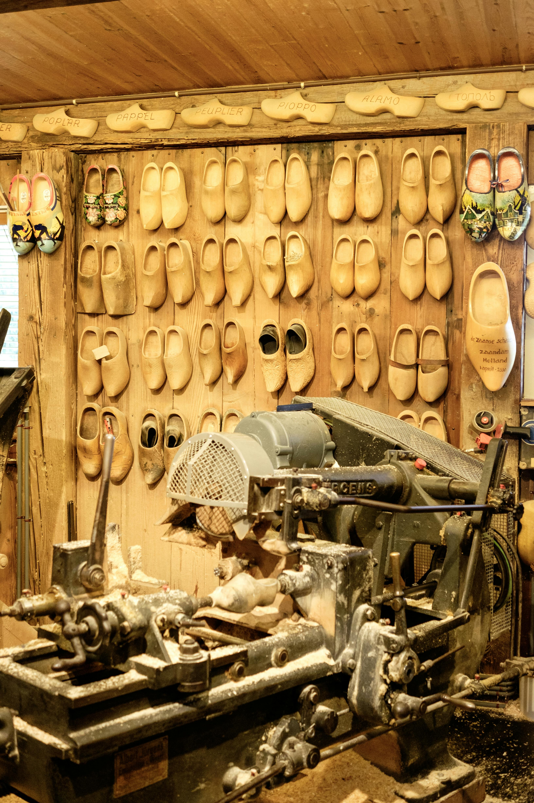
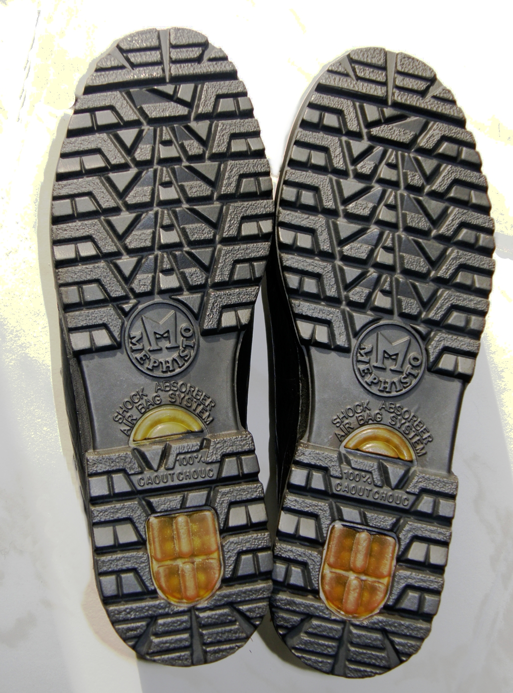
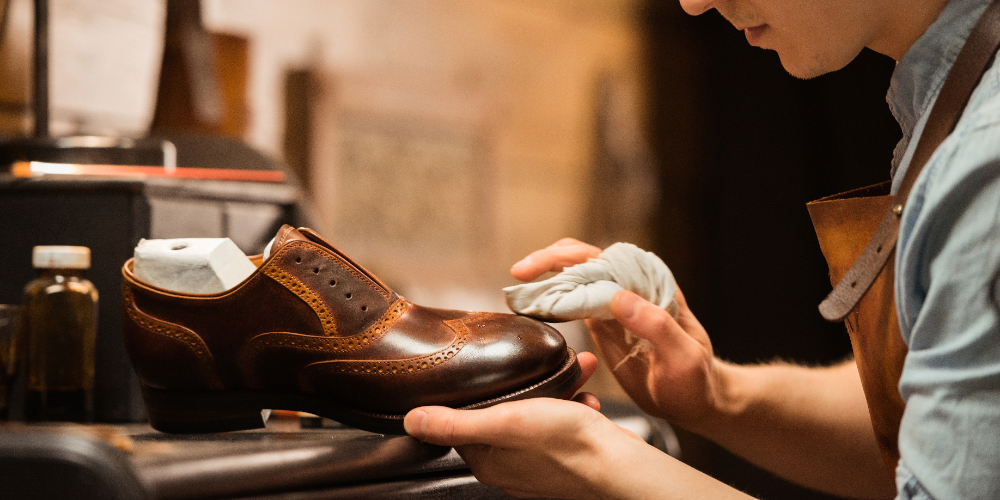
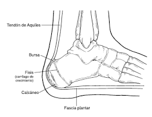
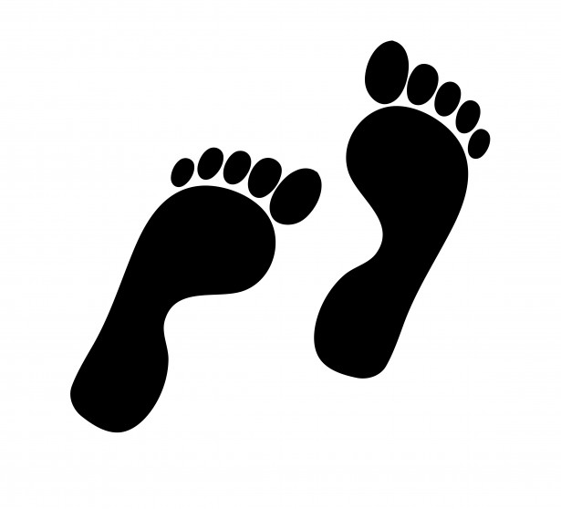
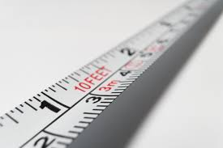

El cuidado minucioso se convierte en una agradable rutina para el propietario del zapato, siempre y cuando disponga de un equipo adecuado. Y aunque se equipo cuente con todos los utensilios necesarios, también debe tener en cuenta el orden correcto de la limpieza.
Poner al alcance de todo el público todos nuestros productos en cualquier parte del país.
Retroalimentarnos con todos nuestros clientes y distribuidores para generar nuevos e innovadores estilos.
Calidad de servicio
Si usted no tiene la suerte de poder escoger lo mejor en cada detalle de su vestuario, debería entonces repartir su presupuesto de tal manera que la mayor parte de este vaya destinada a comprar unos zapatos de buena calidad.
Ahora mostraremos nuestro método de forma resumida para hacer un zapato

Hormas
La horma de un zapato de fabricación industrial sólo puede elaborarse a partir de unos valores medios que suelen dar muy buenos resultado.

Plantillas
Dos plantillas con pestañas del hendido grabadas y dobladas hacia arriba.
Costura, pala, cerquillo
La costura que pasa por la pala, la pestaña del hendido y el cerquillo se entabla en el talón. De manera que bajo el talón no se cose la suela en el cerquillo, sino que se sujeta con clavos desde dentro a través de la plantilla junto al tacón.

Suela, tacón
La suela exterior se cose al cerquillo mediante una máquina. La costura que se puede ver bajo la suela es la misma costura que une la suela y el cerquillo, El tacón de un zapato de cerquillo cosido se compone de cuatro a cinco capas de piel colocadas una encima de la otra según la altura del tacón.
CUIDADOS DEL ZAPATO
Al traspasarle los zapatos, el zapatero inicia al cliente en los secretos del cuidado de los zapatos en forma ceremonial. Es como si entregase una obra de arte única a su comprador.
Pero para preservar las cualidades del calzado durante largo tiempo, es recomendable seguir algunas reglas
10 reglas del cuidado del zapato
1. Al principio, el cliente sólo puede calzarse los zapatos nuevos durante un máximo de dos a tres horas. Sólo cuando el pie se ha "acostumbrado" completamente al zapato puede empezar a llevarlos todo el día.
2. No debe usar el mismo par de zapatos durante dos días seguidos, sino que debe dejarlos reposar un mínimo de 24 horas.
3. Para calzárselos debe usar siempre un calzador, tanto si se trata de zapatos con cordones, de zapatos con hebilla o de mocasines.
4. Antes de descalzarse debe aflojar los cordones en todos los agujeros, para que el pie pueda salir del zapato fácilmente, sin esfuerzos.
5. Inmediatamente después de descalzarse, debe introducir la horma extendedora en su interior.
6. Aunque el zapato se haya mojado a causa de la nieve o de la lluvia, debe introducir inmediatamente las hormas extendedoras en su interior. A continuación debe colocarlos de lado y dejar que se sequen durante un día entero.
7. Es recomendable que cepille los zapatos después de cada uso, aunque en apariencia no haya disminuido su brillo anterior.
8. Si durante un tiempo no usa los zapatos, debe aplicarles una fina capa de betún y conservarlos en la bolsa que recibió del zapatero, de pie y en el interior de una caja de cartón.
9. El propietario de un zapato hecho a medida no debería prestar nunca sus zapatos, ya que no existen dos pies iguales.
10. Todo zapato nuevo tiene su carácter especial. Su verdadera belleza se aprecia realmente cuando se lleva con traje y en la ocasión adecuada.
Medidas y pie
La creación de un zapato a medida comienza con una cuidadosa toma de medidas del pie. Este proceso no solo implica medir, sino también observar y entender la morfología del pie del cliente. Con un enfoque detallado y personalizado, se logra confeccionar un calzado cómodo y funcional, adaptado a las necesidades específicas de cada persona.

Medición y Evaluación del Pie
La toma de medidas es un paso crucial para crear calzado a medida. Implica un enfoque meticuloso que no solo mide la longitud y la anchura del pie, sino que también observa su contorno, volumen y los puntos clave como el arco y los talones. El proceso incluye:
Longitud y Anchura: Se mide con precisión la longitud del pie utilizando una cinta métrica de zapatero y se determina la anchura en puntos clave, como el metatarso y el talón.
Contorno y Volumen: Se calcula el volumen del pie para asegurarse de que el calzado tendrá la forma correcta y será cómodo.
Posición Cargada vs. Relajada: Se toman medidas tanto con el pie bajo carga (de pie) como en estado relajado (sentado), lo que ayuda a crear un zapato que se adapte a la forma natural del pie mientras camina.

Herramientas y Métodos utilizados en la Medición
El zapatero utiliza herramientas especializadas como el pedígrafo para tomar huellas precisas del pie y un aparato de medición para determinar las dimensiones exactas. Algunos de los pasos clave en este proceso son:
Pedígrafo: Se usa para obtener la huella del pie y observar los puntos de presión y deformaciones como hundimiento en el puente.
Contorno Lateral: El contorno lateral del pie proporciona una imagen precisa de la altura de los dedos, la curvatura del talón y la constitución general del pie.
Perspectiva y Huella: La huella y la perspectiva lateral permiten al zapatero entender mejor cómo se comportará el pie dentro del zapato.

Numeración del Calzado: Historia y Sistemas
La numeración del calzado ha sido un sistema de medidas utilizado para determinar el tamaño del zapato, y ha variado ampliamente a lo largo de la historia. Desde el siglo XVIII, se emplearon distintos puntos de referencia como el punto París, Berlín o Viena, pero no fue sino hasta finales del siglo XIX que comenzó a tener importancia debido al avance en la producción en masa. A lo largo del tiempo, diferentes países han adoptado diversos sistemas de numeración, siendo los más destacados el sistema francés, inglés, americano y métrico, con sus respectivas peculiaridades y conversiones.
La Numeración Francesa
Durante la época de Napoleón, a principios del siglo XIX, se estandarizó el uso del punto París, el cual equivalía a 2/3 cm o 6,667 mm. Sin embargo, esta medida resultó ser demasiado grande, por lo que con el tiempo se introdujeron las medias medidas, como el número 40,5, que equivale aproximadamente a 27 cm.
El sistema francés fue adoptado por muchos países europeos, y su éxito se debió en parte a la expansión de la industria del calzado durante la Revolución Industrial, la cual permitió la estandarización de tallas a nivel masivo. La numeración francesa se basa en la longitud del pie, y cada número de calzado representa una medida específica, que va aumentando en 2/3 cm a medida que se incrementa el número.
La Numeración Inglesa y Americana
Sistema Inglés:
El sistema inglés de numeración fue fijado por el rey Eduardo II de Inglaterra en el siglo XIV. El sistema se basa en la unidad de medida del grano de cebada, y cada 1/3 de pulgada (0,846 cm) representaba un número en la escala. Sin embargo, debido a que esta unidad era demasiado grande para el calzado, se introdujeron los "medios números" para ajustar la longitud.
Sistema Americano:
El sistema americano de numeración es muy similar al inglés, pero tiene una pequeña variación en el punto de partida. El sistema estadounidense comienza aproximadamente 1,116 mm antes que el sistema inglés, lo que hace que las tallas americanas sean ligeramente más pequeñas en comparación con las inglesas.
Catálogo
Trabajamos en nuestro catálogo para seguir innovando. ¡Te encantará!